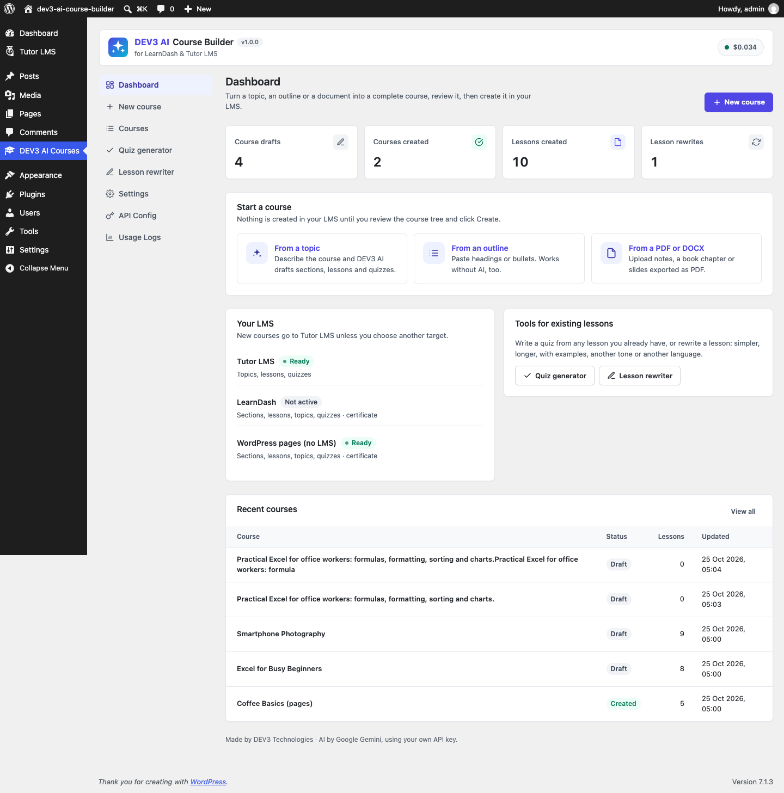
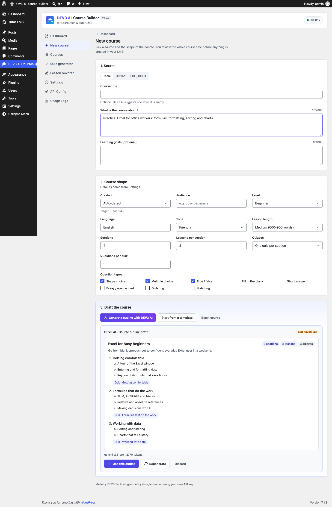
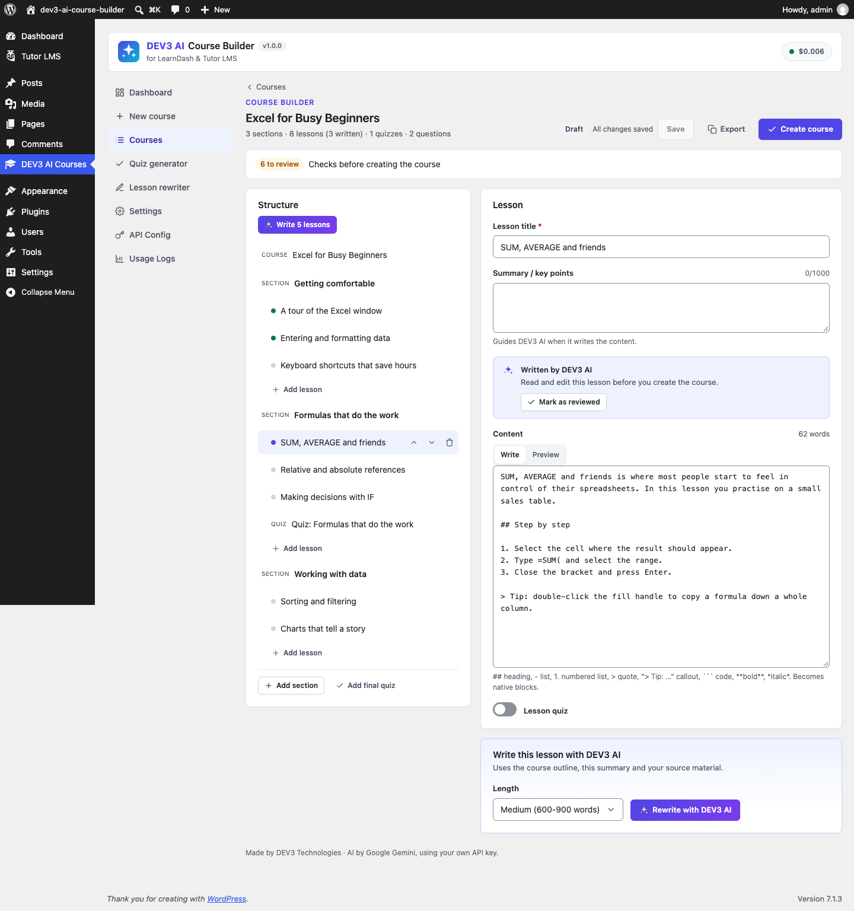
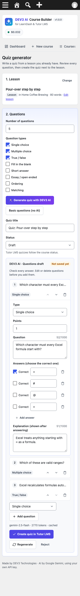
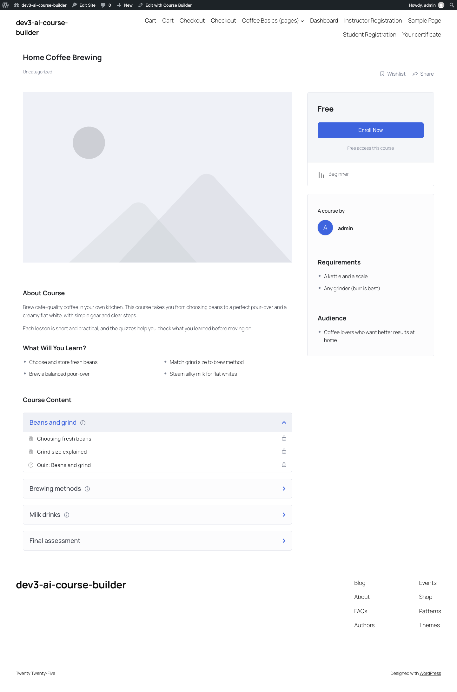
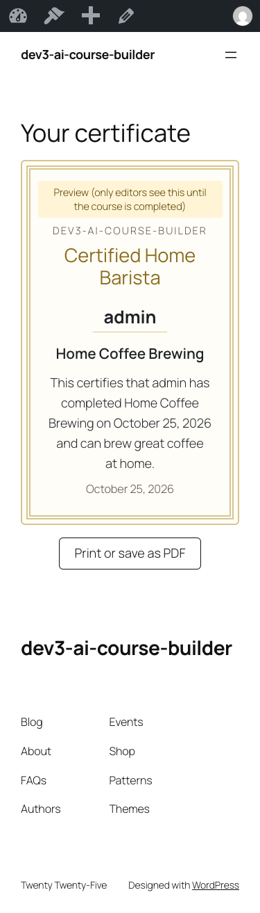

1. Installation
- In WordPress go to Plugins → Add New → Upload Plugin, choose
dev3-ai-course-builder.zipand activate it. - Optional: activate Tutor LMS (free) or LearnDash. Without an LMS, courses are created as WordPress pages.
- Open DEV3 AI Courses in the admin menu.
Requirements: WordPress 6.0+, PHP 7.4+ (tested on 8.3). The PHP zip extension is used to read DOCX files.
2. Google Gemini API key
- Visit Google AI Studio and create an API key.
- In DEV3 AI Courses → API Config, paste the key and click Validate. The key is stored encrypted and never sent to the browser. You can also define
DEV3LM_GEMINI_API_KEYinwp-config.php. - Pick models (defaults: gemini-2.5-flash for lessons and quizzes, gemini-2.5-pro for outlines), and set a monthly budget. When it is reached, DEV3 AI pauses until next month.
You pay Google for usage; Google offers a free tier. Every feature has a non-AI path, so the plugin stays usable with AI off or without a key.
3. Start a new course
New course has three sources:
- Topic: describe the course (and optional goals). Generate outline with DEV3 AI drafts title, description, outcomes, requirements, sections, lessons (with key points), topics and quiz placeholders. Without AI, Start from a template creates N sections × M lessons to fill in.
- Outline: paste headings or bullets.
#= course title,##= section,###= lesson,####= topic. Also understood:Module 1:/Section/Chapter/Unit/Weeklines (sections),Lesson 1:lines, numbered headings like1.2 Titleand indented bullets. Text under a heading becomes lesson content. A heading called Quiz, Questions or Assessment starts a quiz: lines ending in?become questions, and- [x] answer/- [ ] answerlines become choices. - PDF / DOCX: upload a PDF, DOCX, TXT or Markdown file (up to 15 MB). DOCX headings keep their levels. Preview structure shows how the file reads without AI. With DEV3 AI the text (or, for scanned PDFs, the PDF itself) is the basis for the outline.
Course shape options: target LMS, audience, level, language, tone, lesson length, sections, lessons per section, topics per lesson, quiz placement (none / per section / per lesson / final), questions per quiz and question types.
The AI outline appears as a draft (“Not saved yet”). Click Use this outline, Regenerate or Discard.
4. The course builder
- Structure (left): course, sections, lessons, topics and quizzes. Move items with the arrow buttons (lessons move to the previous/next section at the edges), delete them, add lessons, sections and a final quiz. Dots show lesson state: grey = empty, green = written, purple = DEV3 AI draft not reviewed.
- Course details: title, description, excerpt, level, audience, duration, outcomes, requirements, certificate title and text. Write description & certificate (DEV3 AI) or Use a template shows a field-by-field draft.
- Lessons and topics: summary/key points and content. Content uses a simple format that becomes native blocks:
## heading,- list,1. list,> quote,> Tip: …callout,```code,**bold**,*italic*,[link](https://…). Write with DEV3 AI drafts the lesson from the outline, its summary and your source document; compare and accept, edit or reject. Write N lessons drafts every empty lesson in a background job; those lessons are flagged until you click Mark as reviewed. - Quizzes: title, passing grade, instructions and questions. Types: single choice, multiple choice, true/false, fill in the blank (
{blank}marks each gap), short answer, essay, ordering and matching (only the types the target LMS supports are offered). Generate with DEV3 AI writes questions from the related lessons; questions without a marked correct answer are dropped. Basic questions (no AI) builds fill-in-the-blank, true/false and open questions from the lesson text. - Changes autosave. Export downloads the course as JSON; Courses → Import JSON brings it back on any site.
- The Checks bar lists problems to fix (errors block creation) and items to review.
5. Create the course, and undo
Create course asks for the target and the status of created items (Draft by default), then a background job creates everything in order with a progress bar (cancel, retry failed steps). When done you get Edit in LMS and View course links.
Undo build moves every item the build created to the trash, or deletes it permanently (also removing Tutor quiz questions). The draft stays, so you can create it again, even in another LMS.
6. What is created in each LMS
| Tree | Tutor LMS | LearnDash | WordPress pages |
|---|---|---|---|
| Course | courses post, level, benefits, requirements, audience, duration, free | sfwd-courses | Parent page with description, outcomes and a table of contents |
| Section | Tutor topic (topics) | Section heading in the course builder (course_sections) | Heading in the table of contents |
| Lesson | lesson inside the topic | sfwd-lessons | Child page with previous/next links |
| Topic | Next lesson in the same Tutor topic (Tutor has no sub-lessons) | sfwd-topic | Child page of the lesson page |
| Quiz | tutor_quiz with questions and answers in Tutor's quiz tables; a final quiz gets its own topic | sfwd-quiz + ProQuiz questions (sfwd-question); section quizzes attach to the section's last lesson | Self-check page; answers revealed with native Details blocks |
| Certificate | Stored on the course; shown by the Course Certificate block | sfwd-certificates post linked as the course certificate | Certificate page with the Course Certificate block |
Question types map to Tutor's single_choice, multiple_choice, true_false, fill_in_the_blank, short_answer, open_ended, ordering, matching and to LearnDash's single, multiple, cloze_answer, free_answer, essay, sort_answer, matrix_sort_answer.
7. Quiz generator and lesson rewriter
Quiz generator: pick any existing lesson (Tutor lesson, LearnDash lesson or topic, or a page built by the plugin), choose the number and types of questions, generate with DEV3 AI or basic mode, edit, then Create quiz. Tutor: the quiz goes into the lesson's topic right after the lesson. LearnDash: a lesson/topic quiz added to the course steps. Pages: a child quiz page.
Lesson rewriter: pick a lesson and how to rewrite it (simplify, expand, add examples, shorten, fix grammar and clarity, change tone, change reading level, translate) plus extra instructions. Compare the changes, edit, then Save to lesson (saved as native blocks). Every saved rewrite appears in Rewrite history with Undo.
Shortcut: lesson lists in Tutor LMS and LearnDash show Rewrite with DEV3 AI and Quiz with DEV3 AI row actions.
8. Course Certificate block and shortcode
Add the Course Certificate block (or [dev3lm_certificate course="123"]) to any page. Leave the course empty to use the current course page. Learners see their name, the course title, the date and your certificate text once they completed the course (Tutor LMS / LearnDash completion; for page courses any logged-in learner). Editors see a preview. Placeholders: {learner}, {course}, {date}, {site}. Print or save as PDF prints only the certificate.
9. Settings
Default LMS target, status of created items, quiz passing grade, certificate on/off, default language, tone, audience, level, sections, lessons per section, topics per lesson, lesson length, quiz placement, questions per quiz, question types, outline model (pro/default), max source characters sent to DEV3 AI, and delete data on uninstall (courses created in your LMS are always kept).
10. Developer hooks
| Hook | Type | Use |
|---|---|---|
dev3lm_adapters | filter | Add an LMS adapter: $list['mylms'] = new My_Adapter() (extend Dev3\AiCourseBuilder\Lms\Adapter). |
dev3lm_certificate_completed | filter | ( bool $completed, int $course_id, int $user_id ) who may see a certificate. |
dev3lm_prompt, dev3lm_prompt_outline, _lesson, _quiz, _details, _rewrite | filter | Change any DEV3 AI prompt template, schema or model. |
dev3lm_job_finished_dev3lm_build | action | Runs after a course build finishes ($job). |
dev3lm_settings_defaults / dev3lm_settings_sanitize | filter | Add settings. |
dev3lm_ai_guard, dev3lm_model_prices, dev3lm_mask_pii | filter | Shared DEV3 core: block AI calls, cost table, PII masking. |
Created posts carry the meta _dev3lm_blueprint (draft id) and _dev3lm_node; course certificate text is in _dev3lm_certificate (JSON).
REST namespace: dev3lm/v1 (blueprints, blueprints/<id>/outline|lesson|quiz|details|draft-all|build|unbuild, source/parse, lessons, tools/quiz, tools/rewrite, rewrites). All routes need the manage_options capability and a REST nonce.
11. FAQ
Is anything published or created without my review?
No. AI results are drafts, and nothing exists in your LMS until you click Create course.
LearnDash is not installed. Can I test it?
LearnDash is a paid plugin. The adapter uses LearnDash's documented post types, settings API, course-steps model and ProQuiz models.
My PDF shows “No text found”.
It is a scanned PDF. Generate the outline with DEV3 AI (it reads the pages) or paste the outline.
Which data goes to Google?
The topic, outline or document text (capped in Settings) and the lesson text you ask DEV3 AI to work on. PII masking from API Config applies. The usage log can be exported and erased with WordPress privacy tools.
Where are the courses after I delete the plugin?
They stay. Only the plugin's drafts, history and settings are removed when "delete data on uninstall" is on.
Screenshots






12. Changelog
1.0.0 · Initial release.